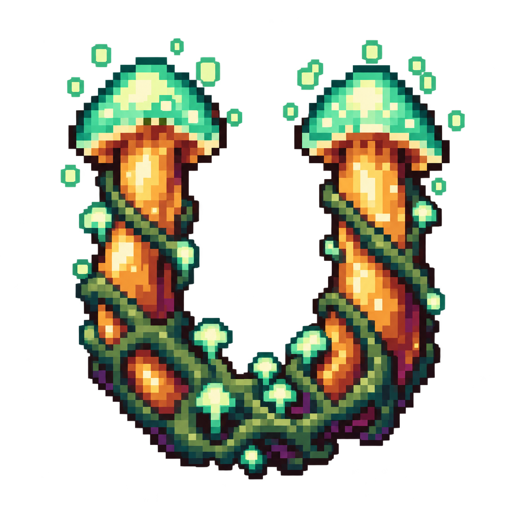
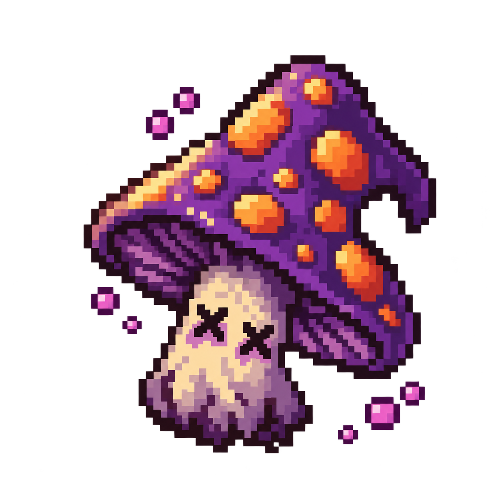
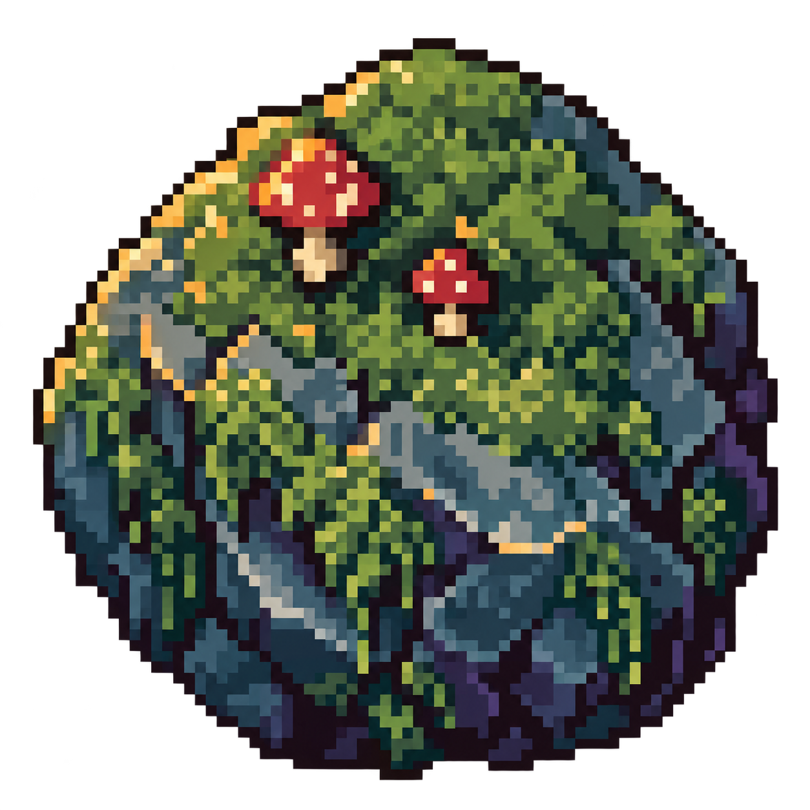
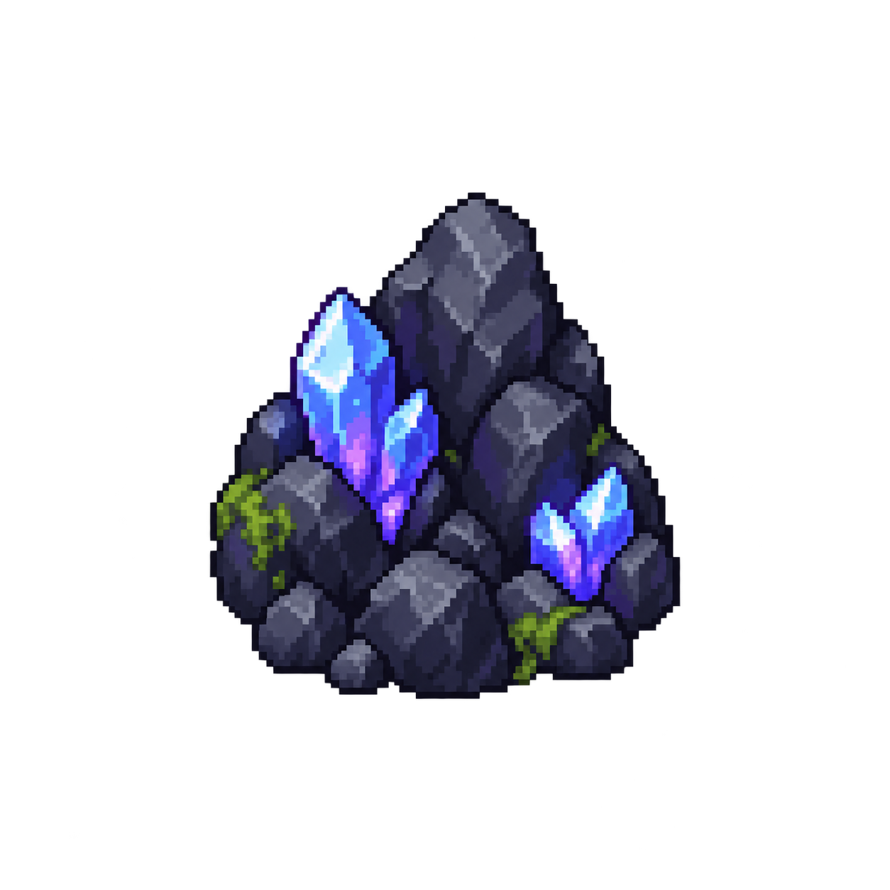
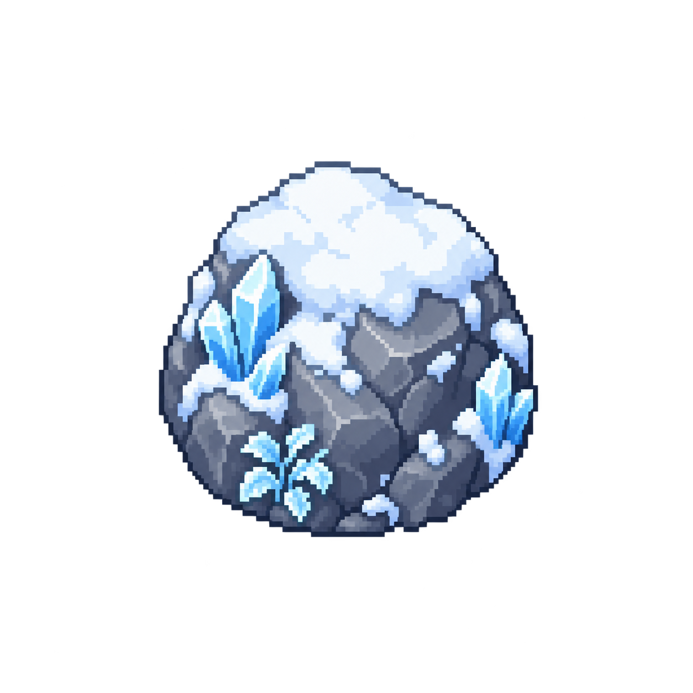

Mushroom Snake · visual asset QA
Dev-only gallery: alpha, scale, palette, silhouette, fixed-corner frames and three production biomes.
Hero · four directions
Body variants · composed curve · tail
Food, positives and negatives
HUD chips
SCORE
12 547
12 547
LENGTH
328
328
COMBO
×10
×10

МАГНИТ · 6.4 c
ПЬЯНЫЙ · 3.1 cD-pad · idle and pressed states
Nine-slice frames
desktop landscape · fixed corners
mobile landscape · fixed corners
Implemented biomes

Green Forest
Dark Cave
Winter World